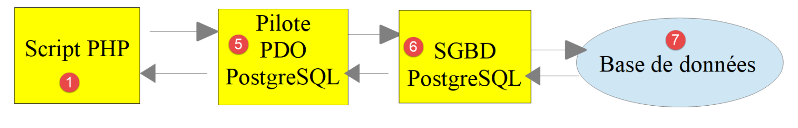

12. Utilisation du SGBD MySQL

Nous allons maintenant écrire des scripts PHP utilisant une base de données MySQL :

Dans l’architecture ci-dessus, le script PHP (1) ne dialogue pas directement avec le SGBD (Système de Gestion de Bases de Données) (3). Il dialogue avec un intermédiaire appelé pilote de SGBD ou encore driver de SGBD. PHP fournit une interface standard pour ces pilotes, l’interface PDO (PHP Data Objects). Cette interface est implémentée par différentes classes adaptées à chaque SGBD : une classe pour le SGBD MySQL, une autre pour le SGBD PostgreSQL… Pour changer de SGBD, on change de pilote :

Le pilote PDO isole le script PHP (1) du SGBD (3, 6). Comme ces pilotes implémentent une interface standard, on peut s’attendre à ce que le script PHP (1) ne change pas si on passe du SGBD MySQL (3) au SGBD PostgreSQL (6). Dans la réalité cet idéal n’existe pas. En effet pour dialoguer avec le SGBD, le script PHP envoie des ordres SQL (Standard Query Language). C’est un langage implémenté par tous les SGBD mais qui est incomplet. Aussi les SGBD lui ont-ils ajouté des ordres propriétaires. C’est une première cause d’incompatibilité entre SGBD. Par ailleurs les types de données utilisables dans les bases de données peuvent être différents d’un SGBD à l’autre. Ainsi PostgreSQL accepte un nombre de types de données bien plus grand que le SGBD MySQL. C’est une seconde cause d’incompatibilité. Une autre cause est la gestion des clés primaires automatiques (générées par le SGBD) : quasiment chaque SGBD a sa propre politique. Etc… Les causes d’incompatibilité sont nombreuses.
Si on veut éviter de réécrire le script PHP (1) en passant de MySQL (3) à PostgreSQL (6), on est généralement amenés à insérer une nouvelle couche entre le script PHP (1) et le pilote PDO (2, 5) dont le rôle sera de gommer les incompatibilités entre les deux SGBD. Cependant dans les cas simples que nous allons rencontrer, cette couche supplémentaire ne sera pas nécessaire.
Nous allons maintenant utiliser le SGBD MySQL. Celui-ci est inclus dans le paquetage Laragon (cf paragraphe lien).
Si le lecteur est novice avec la notion de base de données et de langage SQL, il pourra lire le document [http://sergetahe.com/cours-tutoriels-de-programmation/cours-tutoriel-sql-avec-le-sgbd-firebird/]. Ce document utilise le SGBD Firebird et non pas MySQL mais donne les fondamentaux des bases de données et du langage SQL. Comme MySQL, Firebird dispose d’une version librement utilisable et de faible empreinte mémoire.
12.1. Création d’une base de données
Nous montrons maintenant comment créer une base de données ainsi qu'un utilisateur MySQL avec l’outil Laragon.

- une fois lancé, Laragon [1] peut être administré à partir d'un menu [2] ;
- en [3-5], on installe l'outil [phpMyAdmin] d'administration de MySQL s’il n’a pas déjà été installé ;

- en [6], on démarre le serveur web Apache ainsi que le SGBD MySQL ;
- en [7], le serveur Apache est lancé ;
- en [8], le SBD MySQL est lancé ;

- en [8-10], on crée une base de données qu’on nomme [dbpersonnes] [11]. On va construire une base de données de personnes ;

- en [11], on va gérer la base de données qu’on vient de créer ;

- l’opération [Bases de données] émet une requête web vers l’URL [http://localhost/phpmyadmin]. C’est le serveur web Apache de Laragon qui répond. L’URL [http://localhost/phpmyadmin] est l’URL de l’utilitaire [phpMyAdmin] que nous avons installé précédemment [5]. Cet utilitaire permet de gérer les bases de données MySQL ;
- par défaut, les identifiants de connexion de l’administrateur de la base sont : root [13] sans mot de passe [14] ;

- en [16], la base de données que nous avons créée précédemment ;

- on a pour l’instant une base [dbpersonnes] [17] qui est vide [18] ;
On crée un utilisateur [admpersonnes] avec le mot de passe [nobody] qui va avoir tous les droits sur la base de données [dbpersonnes] :

- en [19], on est positionnés sur la base [dbpersonnes] ;
- en [20], on sélectionne l’onglet [Privileges] ;
- en [21-22], on voit que l’utilisateur [root] a tous les droits sur la base [dbpersonnes] ;
- en [23], on crée un nouvel utilisateur ;

- en [25-26], l’utilisateur aura l’identifiant [admdbpersonnes] ;
- en [27-29], son mot de passe sera [nobody] ;
- en [30], phpMyAdmin signale que le mot de passe est très faible (facile à craquer). En production, il est préférable de générer un mot de passe fort avec [31] ;
- en [32], on indique que l’utilisateur [admdbpersonnes] doit avoir tous les droits sur la base [dbpersonnes] ;
- en [33], on valide les renseignements donnés ;

- en [35], phpMyAdmin indique que l’utilisateur a été créé ;
- en [36], l’ordre SQL qui a été émis sur la base ;
- en [37], l’utilisateur [admpersonnes] a tous les droits sur la base de données [dbpersonnes] ;
Désormais nous avons :
- une base de données MySQL [dbpersonnes] ;
- un utilisateur [admpersonnes/nobody] qui a tous les droits sur cette base de données ;
Nous allons écrire des scripts PHP pour exploiter la base de données. PHP dispose de diverses bibliothèques pour gérer les bases de données. Nous utiliserons la bibliothèque PDO (PHP Data Objects) qui s'intercale entre le code PHP et le SGBD :

La bibliothèque PDO permet au script PHP de s'abstraire de la nature exacte du SGBD utilisé. Ainsi ci-dessus, le SGBD MySQL peut être remplacé par le SGBD PostgreSQL avec un impact minimum sur le code du script PHP. Cette bibliothèque n'est pas disponible par défaut. On peut vérifier sa disponibilité de la façon suivante :

- en [1-4], on vérifie les extensions PDO actives ;
- en [5], on voit que l’extension PDO pour le SGBD MySQL est active. Les autres ne le sont pas. Il suffirait de les cliquer pour les activer ;
Une autre façon d’activer une extension est de modifier directement le fichier [php.ini] (paragraphe lien) qui configure PHP :

- en [1], l’extension PDO de MySQL est activée ;
- en [2], l’extension PDO de Firebird est désactivée ;
Après avoir modifié le fichier [php.ini], il faut relancer le PHP de Laragon pour que les modifications soient prises en compte.
12.2. Connexion à une base de données MySQL
La connexion à un SGBD se fait par la construction d'un objet PDO. Le constructeur admet différents paramètres :
La signification des paramètres est la suivante :
$dsn | (Data Source Name) est une chaîne précisant la nature du SGBD et sa localisation sur internet. La chaîne "mysql:host=localhost" indique qu'on a affaire à un SGBD MySQL opérant sur le serveur local. Cette chaîne peut comprendre d'autres paramètres, notamment le port d'écoute du SGBD et le nom de la base à laquelle on veut se connecter : "mysql:host=localhost:port=3306:dbname=dbpersonnes" ; |
$user | identifiant de l'utilisateur qui se connecte ; |
$passwd | son mot de passe ; |
$driver_options | un tableau d'options pour le pilote du SGBD ; |
Seul le premier paramètre est obligatoire. L'objet ainsi construit sera ensuite le support de toutes les opérations faites sur la base de données à laquelle on s'est connecté. Si l'objet PDO n'a pu être construit, une exception de type PDOException est lancée.
Voici un exemple de connexion [mysql-01.php] :
<?php
// connexion à une base MySql locale
// l'identité de l'utilisateur est (admpersonnes,nobody)
const ID = "admpersonnes";
const PWD = "nobody";
const HOTE = "localhost";
try {
// connexion
$dbh = new PDO("mysql:host=".HOTE, ID, PWD);
print "Connexion réussie\n";
// fermeture de la connexion
$dbh = NULL;
} catch (PDOException $e) {
print "Erreur : " . $e->getMessage() . "\n";
exit();
}
Résultats :
Commentaires
- ligne 11 : la connexion à un SGBD se fait par la construction d'un objet PDO. Le constructeur est ici utilisé avec les paramètres suivants :
- une chaîne précisant la nature du SGBD et sa localisation sur internet. La chaîne "mysql:host=localhost" indique qu'on a affaire à un SGBD MySQL opérant sur le serveur local. Le port n'a pas été précisé. Le port 3306 est alors utilisé par défaut. Le nom de la base de données n'est pas indiqué non plus. Il y aura alors connexion au SGBD MySQL, la sélection d'une base précise se faisant plus tard ;
- un identifiant d'utilisateur ;
- son mot de passe ;
- ligne 14 : la fermeture de la connexion se fait par suppression de l'objet PDO créé initialement ;
- ligne 15 : la connexion à un SGBD peut échouer. Dans ce cas, une exception de type PDOException est lancée. Celle-ci dérive de l’exception PHP [RuntimeException] ;
- ligne 16 : on affiche le message d’erreur de l’exception ;
Réexécutons le script en mettant ligne 6 un mot de passe erroné. Le résultat est alors le suivant :
Erreur : SQLSTATE[HY000] [1045] Access denied for user 'admpersonnes'@'localhost' (using password: YES)
12.3. Création d'une table
Le script [mysql-02.php] montre la création d’une table dans une base de données :
<?php
// identité de la base de données
const DSN = "mysql:host=localhost;dbname=dbpersonnes";
// identifiants de l'utilisateur
const ID = "admpersonnes";
const PWD = "nobody";
try {
// connexion à la base MySql
$connexion = new PDO(DSN, ID, PWD);
// suppression de la table personnes si elle existe
$sql = "drop table personnes";
$connexion->exec($sql);
// création de la table personnes
$sql = "create table personnes (prenom varchar(30) NOT NULL, nom varchar(30) NOT NULL, age integer NOT NULL, primary key(nom,prenom))";
$connexion->exec($sql);
} catch (PDOException $ex) {
// affichage erreur
print "Erreur : " . $ex->getMessage() . "\n";
} finally {
// on se déconnecte si besoin est
$connexion = NULL;
}
// fin
print "Terminé\n";
exit;
Commentaires
- ligne 11 : connexion à la base de données. C’est toujours la 1re chose à faire. Le résultat de la connexion est un objet [PDO] au travers duquel vont prendre les opérations sur la base de données ;
- ligne 13 : l’ordre SQL [drop table personnes] va supprimer la table [personnes] de la base de données [dbpersonnes]. Si la table [personnes] n’existe pas, cela ne provoque pas d’erreur ;
- ligne 14 : exécution de l’ordre SQL précédent sur la base de données [dbpersonnes]. Cet exécution peut lancer une [PDOException] qui sera interceptée ligne 18 ;
- ligne 16 : cet ordre SQL crée une table [personnes]. Une table contient des lignes et des colonnes. Les colonnes forment ce qu’on appelle la structure de la table. Les lignes forment le contenu de la table. Une base de données peut contenir une ou plusieurs tables. La table [personnes] aura ici trois colonnes :
- prenom : le prénom d’une personne sous la forme d’une chaîne d’au plus 30 caractères ;
- nom : le nom de cette même personne sous la forme d’une chaîne d’au plus 30 caractères ;
- age : l’âge de la personne sous la forme d’un entier ;
- l’attribut NOT NULL sur une colonne impose que la colonne ait une valeur. Ne pas lui en donner provoque une [PDOException] ;
- [primary key(nom,prenom)] fixe une clé primaire à la table [personnes]. Une clé primaire a une valeur unique pour chaque ligne de la table. Ici la clé primaire sera obtenue par concaténation des colonnes [nom] et [prenom] de la ligne. Cette contrainte fait que dans la table on ne pourra pas avoir deux personnes ayant les mêmes nom et prénom, donc deux homonymes. Créer un homonyme d’une personne dans la table provoque une [PDOException] ;
- ligne 17 : exécution de l’ordre SQL sur la base de données [dbpersonnes] ;
- ligne 20 : s’il se produit une [PDOException], on affiche le message d’erreur associé ;
- lignes 21-24 : on passe dans la clause [finally] dans tous les cas, exception ou pas, pour fermer la connexion à la base de données (ligne 23) ;
Résultats :
Si l’exécution du script se passe sans erreurs, on peut voir la présence de la table dans phpMyAdmin :


- en [3] la base de données ;
- en [4], la table présentée ;
- en [5], la structure des tables est présentée dans l’onglet [Structure] ;
- en [6-8], les trois colonnes de la table ;
- en [9], aucune des trois colonnes ne peut être vide ;

- en [10], la liste des index de la table. Un index permet de retrouver dans la table les lignes ayant tel index, plus vite que si on parcourait séquentiellement les lignes de la table. La clé primaire fait toujours partie des index mais un index peut ne pas être une clé primaire ;
- en [11], l’index est ici la clé primaire ;
- en [12], l’index est constitué des colonnes [nom, prenom] de chaque ligne ;
Maintenant, voyons ce qui se passe si on crée des erreurs, respectivement sur le nom de la base, le nom de l’utilisateur, son mot de passe :
Si on met un nom de base inexistante :
Erreur : SQLSTATE[HY000] [1044] Access denied for user 'admpersonnes'@'%' to database 'dbpersonnes2'
Si on met un nom d’utilisateur inexistant :
Erreur : SQLSTATE[HY000] [1045] Access denied for user 'admpersonnes2'@'localhost' (using password: YES)
Si on met un mot de passe erroné :
Erreur : SQLSTATE[HY000] [1045] Access denied for user 'admpersonnes'@'localhost' (using password: YES)
12.4. Remplissage d’une table
Nous allons écrire un script PHP qui exécute des ordres SQL trouvés dans le fichier texte [creation.txt] suivant :
Commentaires
- le langage SQL (Structured Query Language) n’est pas sensible à la casse (majuscules, minuscules) des ordre SQL ;
- ligne 1 : on supprime la table [personnes] si elle existe ;
- ligne 2 : on indique au serveur MySQL qu’on va lui envoyer des caractères codés en UTF-8. Cet ordre SQL propre à MySQL est nécessaire ici par exemple pour avoir ligne 7, le é de Géraldine dans la base. Si on ne met pas la ligne 2, le é va être traduit en une suite de deux caractères étranges. Le client est le script PHP écrit sous Netbeans. Or celui-ci code les fichiers en UTF-8 [1-4] ci-dessous :

- ligne 3 : création de la table [personnes] avec les trois colonnes (prenom, nom, age) et la clé primaire (nom, prenom) ;
- lignes 4-10 : insertion de 7 lignes dans la table [personnes] ;
- ligne 6 : cet ordre d’insertion devrait échouer car il tente la même insertion que ligne 5. La contrainte de clé primaire devrait empêcher cette insertion : on ne peut avoir deux personnes ayant mêmes nom et prénom ;
- ligne 10 : cet ordre d’insertion devrait échouer car il tente la même insertion que ligne 9 ;
Le script PHP chargé d’exécuter les ordres SQL de ce fichier texte est le suivant [mysql-03.php] :
<?php
// identité de la base de données
const DSN = "mysql:host=localhost;dbname=dbpersonnes";
// identifiants de l'utilisateur
const ID = "admpersonnes";
const PWD = "nobody";
// identité du fichier texte des commandes SQL à exécuter
const SQL_COMMANDS_FILENAME = "creation.txt";
// ouverture connexion à la base MySql
try {
$connexion = new PDO(DSN, ID, PWD);
} catch (PDOException $ex) {
// affichage erreur
print "Erreur : " . $ex->getMessage() . "\n";
exit;
}
// on veut qu'à chaque erreur de SGBD, une exception soit lancée
$connexion->setAttribute(PDO::ATTR_ERRMODE, PDO::ERRMODE_EXCEPTION);
// exécution du fichier d'ordres SQL
$erreurs = exécuterCommandes($connexion, SQL_COMMANDS_FILENAME, TRUE, FALSE);
// fermeture connexion
$connexion = NULL;
//affichage nombre d'erreurs
printf("\n-----------------------\nIl y a eu %d erreur(s)\n", count($erreurs));
for ($i = 0; $i < count($erreurs); $i++) {
print "$erreurs[$i]\n";
}
// c'est fini
print "Terminé\n";
exit;
// ---------------------------------------------------------------------------------
function exécuterCommandes(PDO $connexion, string $SQLFileName, bool $suivi = FALSE, bool $arrêt = TRUE): array {
// utilise la connexion $connexion
// exécute les commandes SQL contenues dans le fichier texte SQLFileName
// ce fichier est un fichier de commandes SQL à exécuter à raison d'une par ligne
// si $suivi=1 alors chaque exécution d'un ordre SQL fait l'objet d'un affichage indiquant sa réussite ou son échec
// si $arrêt=1, la fonction s'arrête sur la 1re erreur rencontrée sinon elle exécute ttes les commandes sql
// la fonction rend un tableau (nb d'erreurs, erreur1, erreur2…)
// on vérifie la présence du fichier SQLFileName
if (!file_exists($SQLFileName)) {
return ["Le fichier [$SQLFileName] n'existe pas"];
}
// exécution des requêtes SQL contenues dans SQLFileName
// on les met dans un tableau
$requêtes = file($SQLFileName);
// erreur ?
if ($requêtes === FALSE) {
return ["Erreur lors de l'exploitation du fichier SQL [$SQLFileName]"];
}
// on exécute les requêtes une par une - au départ pas d'erreurs
$erreurs = [];
$i = 0;
$fini = FALSE;
while ($i < count($requêtes) && !$fini) {
// on récupère le texte de la requête
// trim va enlever la marque de fin de ligne
$requête = trim($requêtes[$i]);
// requête vide ?
if (strlen($requête) == 0) {
// on ignore la requête et on passe à la requête suivante
$i++;
continue;
}
try {
// exécution de la requête - une exception peut être lancée
$connexion->exec($requête);
// suivi écran ou non ?
if ($suivi) {
print "$requête : Exécution réussie\n";
}
} catch (PDOException $ex) {
// il s'est produit une erreur
addError($erreurs, $requête, $ex->getMessage(), $suivi);
// est-ce qu'on s'arrête ?
$fini = $arrêt;
}
// requête suivante
$i++;
}
// résultat
return $erreurs;
}
function addError(array &$erreurs, string $requête, string $msg, bool $suivi): void {
// on ajoute un msg d'erreur
$msg = "$requête : Erreur (" . $msg . ")";
$erreurs[] = $msg;
// suivi écran ou non ?
if ($suivi) {
print "$msg\n";
}
}
Commentaires
- la fonction [exécuterCommandes] (lignes 36-89) est chargée d’exécuter les commandes SQL qu’elle trouve dans le fichier texte [$SQLFileName] (paramètre 2). Pour les exécuter elle utilise la connexion ouverte [$connexion] (paramètre 1) avec le serveur MySQL. Le troisième paramètre [$suivi] est un booléen qui contrôle les affichages écran : à TRUE, l’ordre SQL exécuté est affiché à l’écran avec sa réussite ou son échec, sinon l’exécution de l’ordre SQL est silencieux. Le quatrième paramètre [$arrêt] contrôle ce qu’il faut faire lorsq’une commande SQL échoue : à TRUE, il indique que l’exécution des commandes SQL doit s’arrêter, sinon celle-ci continue. La fonction [exécuterCommandes] rend un tableau de messages d’erreurs, vide s’il n’y a pas eu d’erreurs ;
- lignes 11-18 : on ouvre la connexion vers la base MySQL [dbpersonnes]. Si l’ouverture échoue, un message d’erreur est affiché et on s’arrête (lignes 14-18) ;
- ligne 22 : on passe donc une connexion ouverte à la fonction [exécuterCommandes]. Elle sera fermée au retour de la fonction (ligne 24) ;
- ligne 20 : avant de la passer à la fonction [exécuterCommandes], on configure la connexion. En cas d’erreur, les opérations SQL avec un objet [PDO] peuvent soit rendre le booléen FALSE (valeur par défaut), soit lancer une exception. La ligne 20 choisit ce second cas. En effet, il est facile ‘d’oublier’ de vérifier le résultat booléen de l’exécution d’un ordre SQL. Cela produira une erreur ultérieurement mais ailleurs dans le code rendant ainsi plus difficile le lieu originel de celle-ci. Dans le cas d’une exception non gérée (absence de catch), l’exception va remonter dans le code jusqu’à rencontrer un catch ou jusqu’à remonter à l’interpréteur PHP qui lui interceptera l’exception. Dans ce cas, la nature de l’exception et son lieu d’origine dans le code sont affichés ;
- ligne 22 : la fonction [exécuterCommandes] est appelée pour exécuter le fichier d’ordres SQL [$SQLFileName] ;
- lignes 45-47 : on vérifie que le fichier des ordres SQL existe bien. Si ce n’est pas le cas, on note l’erreur et on retourne ce résultat ;
- ligne 51 : on met les ordres SQL dans un tableau [$requêtes]. Lignes 53-55, si l’opération échoue, on rend un tableau d’erreurs avec un unique message ;
- ligne 57 : on va cumuler les erreurs dans le tableau [$erreurs] ;
- ligne 58 : n° de la requête ;
- ligne 59 : le booléen [$fini] contrôle l’exécution des ordres SQL du tableau [$requêtes]. Lorsqu’il passe à TRUE, l’exécution s’arrête ;
- ligne 60 : on boucle sur toutes les requêtes ;
- ligne 63 : on extrait le texte de l’ordre SQL n° i. La fonction [trim] va enlever les espaces qui précèdent et suivent le texte de l’ordre SQL. Par ‘espaces’, il faut entendre le blanc \b, le retour chariot \r, la marque de fin de ligne \n, le saut de page \f, la tabulation \t… Ce qui nous importe ici c’est que la marque de fin de ligne du texte SQL va disparaître ;
- lignes 65-69 : si le texte SQL est vide, alors on ignore la requête et on passe à la suivante ;
- ligne 72 : on envoie l’ordre SQL au serveur MySQL. La méthode [PDO::exec] va lancer une exception si l’exécution échoue. On rappelle que ce comportement est dû à la configuration faite à la ligne 20 ;
- ligne 79 : le message d’erreur est ajouté au tableau des erreurs ;
- ligne 81 : on positionne le booléen [$fini] qui contrôle la boucle. Si le paramètre [$arrêt] (ligne 36) vaut TRUE, on doit arrêter la boucle ;
- lignes 74-76 : si l’exécution de l’ordre SQL a réussi, on l’affiche à l’écran si le paramètre [$suivi] (ligne 36) vaut TRUE ;
- ligne 87 : une fois toutes les ordres SQL exécutés, on rend le tableau des erreurs [$erreurs] ;
La fonction [adError] des lignes 90-97 permet d’ajouter une erreur au tableau des erreurs [$erreurs] :
- ligne 90 : la fonction reçoit 4 paramètres :
- le paramètre [$erreurs] est passé par référence. En effet on veut agir sur le tableau qui est passé en paramètre et non sur une copie de celui-ci ;
- le paramètre [$requête] est le texte SQL de l’ordre qui a échoué ;
- le paramètre [$msg] est le message d’erreur lié à l’ordre qui a échoué ;
- le booléen [$suivi] indique si le message d’erreur doit être affiché ($suivi=TRUE) ou non ($suivi=FALSE) sur la console ;
La fonction [exécuterCommandes] est appelé par le script des lignes 3-33 :
- lignes 11-18 : une connexion est faite avec la base de données MySQL [dbpersonnes] ;
- ligne 20 : la connexion est configurée ;
- ligne 22 : le fichier des ordres SQL est ensuite exécuté ;
- ligne 24 : on ferme la connexion ;
- lignes 26-29 : on affiche les erreurs rendues par la fonction [exécuterCommandes] ;
Les résultats écran :
drop table if exists personnes : Exécution réussie
SET NAMES 'utf8' : Exécution réussie
create table personnes (prenom varchar(30) not null, nom varchar(30) not null, age integer not null, primary key (nom,prenom)) : Exécution réussie
insert into personnes (prenom, nom, age) values('Paul','Langevin',48) : Exécution réussie
insert into personnes (prenom, nom, age) values ('Sylvie','Lefur',70) : Exécution réussie
insert into personnes (prenom, nom, age) values ('Sylvie','Lefur',70) : Erreur (SQLSTATE[23000]: Integrity constraint violation: 1062 Duplicate entry 'Lefur-Sylvie' for key 'PRIMARY')
insert into personnes (prenom, nom, age) values ('Pierre','Nicazou',35) : Exécution réussie
insert into personnes (prenom, nom, age) values ('Géraldine','Colou',26) : Exécution réussie
insert into personnes (prenom, nom, age) values ('Paulette','Girond',56) : Exécution réussie
insert into personnes (prenom, nom, age) values ('Paulette','Girond',56) : Erreur (SQLSTATE[23000]: Integrity constraint violation: 1062 Duplicate entry 'Girond-Paulette' for key 'PRIMARY')
-----------------------
Il y a eu 2 erreur(s)
insert into personnes (prenom, nom, age) values ('Sylvie','Lefur',70) : Erreur (SQLSTATE[23000]: Integrity constraint violation: 1062 Duplicate entry 'Lefur-Sylvie' for key 'PRIMARY')
insert into personnes (prenom, nom, age) values ('Paulette','Girond',56) : Erreur (SQLSTATE[23000]: Integrity constraint violation: 1062 Duplicate entry 'Girond-Paulette' for key 'PRIMARY')
Terminé
Les insertions faites sont visibles avec phpMyAdmin :

12.5. Exécution d’ordres SQL quelconques
Le script suivant montre l'exécution des ordres SQL du fichier texte [sql.txt] suivant :
Parmi ces ordres SQL, il y a l'ordre select qui ramène des résultats de la base de données, les ordres insert, update, delete qui modifient la base sans ramener de résultats et enfin des ordres erronés tels que le dernier (xselect). Le script [mysql-04.php] est le suivant :
<?php
// identité de la base de données
const DSN = "mysql:host=localhost;dbname=dbpersonnes";
// identifiants de l'utilisateur
const ID = "admpersonnes";
const PWD = "nobody";
// identité du fichier texte des commandes SQL à exécuter
const SQL_COMMANDS_FILENAME = "sql.txt";
try {
// connexion à la base MySql
$connexion = new PDO(DSN, ID, PWD);
} catch (PDOException $ex) {
// affichage erreur
print "Erreur : " . $ex->getMessage() . "\n";
exit;
}
// on veut qu'à chaque erreur de SGBD, une exception soit lancée
$connexion->setAttribute(PDO::ATTR_ERRMODE, PDO::ERRMODE_EXCEPTION);
// exécution du fichier d'ordres SQL
$erreurs = exécuterCommandes($connexion, SQL_COMMANDS_FILENAME, TRUE, FALSE);
// fermeture connexion
$connexion = NULL;
//affichage nombre d'erreurs
printf("\n-----------------------\nIl y a eu %d erreur(s)\n", count($erreurs));
for ($i = 0; $i < count($erreurs); $i++) {
print "$erreurs[$i]\n";
}
// c'est fini
print "Terminé\n";
exit;
// ---------------------------------------------------------------------------------
function exécuterCommandes(PDO $connexion, string $SQLFileName, bool $suivi = FALSE, bool $arrêt = TRUE): array {
………………………………………………………….
// on exécute les requêtes une par une - au départ pas d'erreurs
$erreurs = [];
$i = 0;
$fini = FALSE;
while ($i < count($requêtes) && !$fini) {
// on récupère le texte de la requête
// trim va enlever la marque de fin de ligne
$requête = trim($requêtes[$i]);
// requête vide ?
if (strlen($requête) == 0) {
// on ignore la requête et on passe à la requête suivante
$i++;
continue;
}
// exécution de la requête
// on récupère son nom
$commande = "";
if (preg_match("/^\s*(\S+)/", $requête, $champs)) {
$commande = strtolower($champs[0]);
}
try {
// est-ce un ordre SELECT ?
if ($commande === "select") {
$résultat = $connexion->query($requête);
} else {
$résultat = $connexion->exec($requête);
}
// suivi écran ou non ?
if ($suivi) {
print "[$requête] : Exécution réussie\n";
}
// on affiche le résultat de l'exécution
afficherInfos($commande, $résultat);
} catch (PDOException $ex) {
// il s'est produit une erreur
addError($erreurs, $requête, $ex->getMessage(), $suivi);
// est-ce qu'on s'arrête ?
$fini = $arrêt;
}
// requête suivante
$i++;
}
// résultat
return $erreurs;
}
function addError(array &$erreurs, string $requête, string $msg, bool $suivi): void {
…
}
// ---------------------------------------------------------------------------------
function afficherInfos(string $commande, $résultat): void {
// affiche le résultat $résultat d'une requête sql
// s'agissait-il d'un select ?
switch ($commande) {
case "select" :
// on affiche les noms des champs
$titre = "";
$nbColonnes = $résultat->columnCount();
for ($i = 0; $i < $nbColonnes; $i++) {
$infos = $résultat->getColumnMeta($i);
$titre .= $infos['name'] . ",";
}
// on enlève le dernier caractère ,
$titre = substr($titre, 0, strlen($titre) - 1);
// on affiche la liste des champs
print "$titre\n";
// ligne séparatrice
$séparateurs = "";
for ($i = 0; $i < strlen($titre); $i++) {
$séparateurs .= "-";
}
print "$séparateurs\n";
// données
foreach ($résultat as $ligne) {
$data = "";
for ($i = 0; $i < $nbColonnes; $i++) {
$data .= $ligne[$i] . ",";
}
// on enlève le dernier caractère ,
$data = substr($data, 0, strlen($data) - 1);
// on affiche
print "$data\n";
}
break;
case "update":
case "insert":
case "delete";
print " $résultat lignes(s) a (ont) été modifiée(s)\n";
break;
}
}
Commentaires
- lignes 36-83 : la fonction [exécuterCommandes] est légèrement modifiée : l’ordre SQL [select] ne s’exécute pas de la même façon que les autres ordres SQL. Cet ordre est le seul à ramener comme résultat une table, ç-à-d un ensemble de lignes et de colonnes de la base de données ;
- lignes 55-57 : on isole le 1er mot de l’ordre SQL à l’aide d’une expression régulière ;
- lignes 60-64 : si la commande SQL est [select], on utilise la méthode [PDO::query] sinon la méthode [PDO::exec] pour exécuter l’ordre SQL. Dans les deux cas, si l’exécution échoue, une exception sera lancée et interceptée lignes 71-77. Si l’exécution réussit, la ligne 70 affiche son résultat ;
- lignes 90-130 : la fonction afficherInfos affiche des informations sur le résultat de l’exécution d’un ordre SQL ;
- ligne 94 : on traite le cas du [select]. Son résultat est un objet de type [PDOStatement] ;
- ligne 96 : la méthode [PDOStatement::getColumnCount()] rend le nombre de colonnes de la table résultat du select ;
- lignes 98-99 : la méthode [PDOStatement::getMeta(i)] rend un dictionnaire d'informations sur la colonne n° i de la table résultat du select. Dans ce dictionnaire, la valeur associée à la clé 'name' est le nom de la colonne ;
- lignes 97-102 : les noms des colonnes de la table résultat du select sont concaténées dans une chaîne de caractères ;
- lignes 105-110 : on construit une ligne de séparation ayant la même longueur que la chaîne de caractères construite précédemment ;
- lignes 112-121 : un objet de type PDOStatement peut être parcouru par une boucle foreach. A chaque itération, l'élément obtenu est une ligne de la table résultat du select sous la forme d'un tableau de valeurs représentant les valeurs des différentes colonnes de la ligne. On affiche toutes ces valeurs avec une boucle for (lignes 114-116) ;
- lignes 123-127 : le résultat de l'exécution d'un ordre insert, update, delete est le nombre de lignes modifiées par l'ordre ;
Les résultats écran :
[set names 'utf8'] : Exécution réussie
[select * from personnes] : Exécution réussie
prenom,nom,age
--------------
Géraldine,Colou,26
Paulette,Girond,56
Paul,Langevin,48
Sylvie,Lefur,70
Pierre,Nicazou,35
[select nom,prenom from personnes order by nom asc, prenom desc] : Exécution réussie
nom,prenom
----------
Colou,Géraldine
Girond,Paulette
Langevin,Paul
Lefur,Sylvie
Nicazou,Pierre
[select * from personnes where age between 20 and 40 order by age desc, nom asc, prenom asc] : Exécution réussie
prenom,nom,age
--------------
Pierre,Nicazou,35
Géraldine,Colou,26
[insert into personnes values('Josette','Bruneau',46)] : Exécution réussie
1 lignes(s) a (ont) été modifiée(s)
[update personnes set age=47 where nom='Bruneau'] : Exécution réussie
1 lignes(s) a (ont) été modifiée(s)
[select * from personnes where nom='Bruneau'] : Exécution réussie
prenom,nom,age
--------------
Josette,Bruneau,47
[delete from personnes where nom='Bruneau'] : Exécution réussie
1 lignes(s) a (ont) été modifiée(s)
[select * from personnes where nom='Bruneau'] : Exécution réussie
prenom,nom,age
--------------
[insert into personnes values('Josette','Bruneau',46)] : Exécution réussie
1 lignes(s) a (ont) été modifiée(s)
[xselect * from personnes where nom='Bruneau'] : Erreur (SQLSTATE[42000]: Syntax error or access violation: 1064 You have an error in your SQL syntax; check the manual that corresponds to your MySQL server version for the right syntax to use near 'xselect * from personnes where nom='Bruneau'' at line 1)
-----------------------
Il y a eu 1 erreur(s)
[xselect * from personnes where nom='Bruneau'] : Erreur (SQLSTATE[42000]: Syntax error or access violation: 1064 You have an error in your SQL syntax; check the manual that corresponds to your MySQL server version for the right syntax to use near 'xselect * from personnes where nom='Bruneau'' at line 1)
Terminé
12.6. Utilisation d’ordres SQL préparés
12.6.1. Exemple 1
Examinons le script suivant [mysql-05.php] :
<?php
// identité de la base de données
const DSN = "mysql:host=localhost;dbname=dbpersonnes";
// identifiants de l'utilisateur
const ID = "admpersonnes";
const PWD = "nobody";
try {
// connexion à la base MySql
$connexion = new PDO(DSN, ID, PWD);
// on veut qu'à chaque erreur de SGBD, une exception soit lancée
$connexion->setAttribute(PDO::ATTR_ERRMODE, PDO::ERRMODE_EXCEPTION);
// on vide la table des personnes
$connexion->exec("delete from personnes");
// une liste de personnes
$personnes = [];
$personnes[] = ["nom" => "Langevin", "prenom" => "Paul", "age" => 47];
$personnes[] = ["nom" => "Lefur", "prenom" => "Sylvie", "age" => 28];
// on va mettre ces personnes dans la base de données
$statement = $connexion->prepare("insert into personnes (nom, prenom, age) values (:nom, :prenom, :age)");
for ($i = 0; $i < count($personnes); $i++) {
$statement->execute($personnes[$i]);
}
} catch (PDOException $ex) {
// affichage erreur
print "Erreur : " . $ex->getMessage() . "\n";
} finally {
// fermeture connexion
$connexion = NULL;
}
// c'est fini
print "Terminé\n";
exit;
Commentaires
Nous nous intéressons ici aux lignes 16-24 qui insèrent deux personnes dans la table des personnes de la base [dbpersonnes].
- ligne 21 : on ‘prépare’ un ordre SQL paramétré. Les paramètres sont précédés du caractère : :nom, :prenom, :age. Pour ‘préparer’ un ordre SQL, on utilise la méthode [PDO::prepare]. Le résultat est un type [PDOStatement]. La ‘préparation’ n’est pas une exécution : rien n’est exécuté ;
- ligne 23 : exécution de l’ordre ‘préparé’ avec la méthode [PDOStatement::execute]. Pour ce faire, il faut donner des valeurs aux paramètres :nom, :prenom et :age. Il y a plusieurs façons de faire cela. On utilise ici un dictionnaire ayant pour clés les paramètres de l’ordre préparé que l’on passe à la méthode [PDOStatement::execute]. Une autre façon de faire est de donner aux paramètres une valeur avec la méthode [PDOStatement::bindValue($paramètre,$valeur)]. Par exemple ici :
$statement→bindValue(“nom”,”Langevin”);
$statement→bindValue(“prenom”,”Paul”);
$statement→bindValue(“age”,47);
$statement→execute();
L’inconvénient est qu’il faut réitérer cette instruction pour chaque paramètre. La méthode du dictionnaire peut alors être plus pratique. La méthode [PDOStatement::execute] rend FALSE si l’exécution échoue ;
- la méthode utilisée ici pour faire les insertions :
- une méthode préparée ;
- n exécutions de l’ordre préparé ;
est plus économique en temps d’exécution que d’exécuter n ordres SQL différents. Cette méthode est donc à privilégier. Elle est utilisable pour les ordres SQL select, update, delete, insert. Dans le cas de l’ordre SQL select, après son exécution avec [PDOStatement::execute], on récupère les lignes du résultat avec la méthode [PDOStatement::fetchAll] ;
12.6.2. Exemple 2
Le script suivant [mysql-06.php] montre l’utilisation d’un ordre préparé pour l’opération SQL select, ainsi que diverses façons de récupérer les lignes ramenées par cette opération :
<?php
// identité de la base de données
const DSN = "mysql:host=localhost;dbname=dbpersonnes";
// identifiants de l'utilisateur
const ID = "admpersonnes";
const PWD = "nobody";
try {
// connexion à la base MySql
$connexion = new PDO(DSN, ID, PWD);
// on veut qu'à chaque erreur de SGBD, une exception soit lancée
$connexion->setAttribute(PDO::ATTR_ERRMODE, PDO::ERRMODE_EXCEPTION);
// on vide la table des personnes
$connexion->exec("delete from personnes");
// on va mettre ces personnes dans la base de données
$statement = $connexion->prepare("insert into personnes (nom, prenom, age) values (:nom, :prenom, :age)");
for ($i = 0; $i < 10; $i++) {
$statement->execute(["nom" => "nom" . $i, "prenom" => "prenom" . $i, "age" => $i * 10]);
}
// on interroge la base
$statement = $connexion->prepare("select nom, prenom, age from personnes");
$statement->execute();
// 1re ligne
$ligne = $statement->fetch();
var_dump($ligne);
// 2e ligne
$ligne = $statement->fetch(PDO::FETCH_ASSOC);
var_dump($ligne);
// 3e ligne
$ligne = $statement->fetch(PDO::FETCH_OBJ);
var_dump($ligne);
// 4e ligne
$statement->setFetchMode(PDO::FETCH_CLASS, "Person");
$ligne = $statement->fetch();
var_dump($ligne);
// lecture séquentielle de toutes les lignes
$statement = $connexion->prepare("select nom, prenom, age from personnes");
$statement->execute();
$statement->setFetchMode(PDO::FETCH_CLASS, "Person");
while ($personne = $statement->fetch()) {
print "$personne\n";
}
} catch (PDOException $ex) {
// affichage erreur
print "Erreur : " . $ex->getMessage() . "\n";
} finally {
// fermeture connexion
$connexion = NULL;
}
// c'est fini
print "Terminé\n";
exit;
class Person {
private $nom;
private $prenom;
private $age;
public function __toString() {
return "Personne[$this->nom,$this->prenom,$this->age]";
}
}
Commentaires
- lignes 17-20 : on insère 10 lignes dans la table [personnes] de la base [admpersonnes] :

- ligne 22 : on « prépare » un ordre SQL [select] qu’on exécute ligne 23 ;
- ligne 25 : on récupère avec la méthode [PDOStatement::fetch] une ligne du résultat de l’opération SQL [select] exécutée. La méthode [PDOStatement::fetch] peut récupérer de diverses façons les lignes résultats d’une opération SQL [select] préparée. Le script en présente quelques unes. La méthode [PDOStatement::fetch] sans paramètres ramène la ligne courante du [select] sous la forme d’un dictionnaire indexé à la fois sur les n°s de colonnes et leurs noms ;
- ligne 26 : affiche le résultat suivant :
array(6) {
["nom"]=>
string(4) "nom0"
[0]=>
string(4) "nom0"
["prenom"]=>
string(7) "prenom0"
[1]=>
string(7) "prenom0"
["age"]=>
string(1) "0"
[2]=>
string(1) "0"
}
- lignes 28-29 : le paramètre [PDO::FETCH_ASSOC] fait que la ligne ramenée est un dictionnaire indexé par les noms des colonnes de la table :
- lignes 31-32 : le paramètre [PDO::FETCH_OBJ] fait que la ligne ramenée est un objet de type [stdclass] dont les attributs sont les noms des colonnes de la table :
- ligne 34 : on fixe le mode de recherche de la méthode [fetch] avec la méthode [PDOStatement::setFetchMode]. Ce mode devient alors le mode par défaut tant qu’il n’est pas changé soit par une autre opération [PDOStatement::setFetchMode] soit en passant un mode en paramètre à la méthode [PDOStatement::fetch] comme il a été fait précédemment. L’opération [setFetchMode(PDO::FETCH_CLASS, "Person")] indique que la ligne lue doit être placée dans un objet de type [Person]. Cette classe doit avoir parmi ces attributs, des attributs portant le nom des colonnes de la ligne lue. C’est le cas de la classe [Person] définie aux lignes 56-63 ;
- la ligne 36 affiche le résultat suivant :
- lignes 38-43 : montrent comment exploiter séquentiellement les résultats du [select] ;
- ligne 42 : l’affichage de [$personne] va utiliser la méthode [__toString] de la classe [Person] ;
12.7. Utilisation de transactions
Une transaction permet de regrouper une séquence d’ordres SQL en une unité d’exécution : soit tous les ordres réussissent soit l’un d’eux échoue et alors tous les ordres SQL qui ont précédé celui-ci sont annulés. Dit autrement, lorsqu’on utilise une transaction pour exécuter des ordres SQL, après l’exécution de celle-ci la base de données est dans un état stable :
- soit dans un état nouveau créé par l’exécution réussie de tous les ordres SQL de la transaction ;
- soit dans l’état dans laquelle elle était avant que la transaction ne commence à être exécutée ;
Nous allons reprendre l’exemple de l’exécution des ordres SQL contenus dans un fichier texte étudié au paragraphe lien. Nous allons inclure cette exécution dans une transaction. Les ordres SQL seront contenus dans le fichier [sql2.txt] suivant :
set names 'utf8'
select * from personnes
select nom,prenom from personnes order by nom asc, prenom desc
select * from personnes where age between 20 and 40 order by age desc, nom asc, prenom asc
insert into personnes values('Josette','Bruneau',46)
update personnes set age=47 where nom='Bruneau'
select * from personnes where nom='Bruneau'
delete from personnes where nom='Bruneau'
select * from personnes where nom='Bruneau'
insert into personnes values('Josette','Bruneau',46)
select * from personnes where nom='Bruneau'
xselect * from personnes where nom='Bruneau'
L’ordre erroné de la ligne 12 va faire échouer toute la transaction. On devrait donc retrouver la base comme elle était avant la transaction. Dans l’exemple ci-dessus, on ne devrait donc pas voir dans la table la ligne insérée par la ligne 10 ci-dessus. Le script évolue très peu. On redonne cependant la totalité du code [mysql-07.php] :
<?php
// identité de la base de données
const DSN = "mysql:host=localhost;dbname=dbpersonnes";
// identifiants de l'utilisateur
const ID = "admpersonnes";
const PWD = "nobody";
// identité du fichier texte des commandes SQL à exécuter
const SQL_COMMANDS_FILENAME = "sql2.txt";
try {
// connexion à la base MySql
$connexion = new PDO(DSN, ID, PWD);
} catch (PDOException $ex) {
// affichage erreur
print "Erreur : " . $ex->getMessage() . "\n";
exit;
}
// on veut qu'à chaque erreur de SGBD, une exception soit lancée
$connexion->setAttribute(PDO::ATTR_ERRMODE, PDO::ERRMODE_EXCEPTION);
// exécution du fichier d'ordres SQL
$erreurs = exécuterCommandes($connexion, SQL_COMMANDS_FILENAME, TRUE);
// fermeture connexion
$connexion = NULL;
//affichage nombre d'erreurs
printf("\n-----------------------\nIl y a eu %d erreur(s)\n", count($erreurs));
for ($i = 0; $i < count($erreurs); $i++) {
print "$erreurs[$i]\n";
}
// c'est fini
print "Terminé\n";
exit;
// ---------------------------------------------------------------------------------
function exécuterCommandes(PDO $connexion, string $SQLFileName, bool $suivi = FALSE): array {
// utilise la connexion $connexion
// exécute les commandes SQL contenues dans le fichier texte SQLFileName
// ce fichier est un fichier de commandes SQL à exécuter à raison d'une par ligne
// les commandes SQL sont exécutées dans une transaction
// si l'un des ordres échoue, la transaction est annulée et on retrouve la base de données dans l'état où elle était avant la transaction
// si $suivi=1 alors chaque exécution d'un ordre SQL fait l'objet d'un affichage indiquant sa réussite ou son échec
// la fonction rend un tableau (nb d'erreurs, erreur1, erreur2…)
//
// on vérifie la présence du fichier SQLFileName
if (!file_exists($SQLFileName)) {
return ["Le fichier [$SQLFileName] n'existe pas"];
}
// exécution des requêtes SQL contenues dans SQLFileName
// on les met dans un tableau
$requêtes = file($SQLFileName);
// erreur ?
if ($requêtes === FALSE) {
return ["Erreur lors de l'exploitation du fichier SQL [$SQLFileName]"];
}
// les requêtes vont être placées dans une transaction
$connexion->beginTransaction();
// on exécute les requêtes une par une - au départ pas d'erreurs
$erreurs = [];
$i = 0;
$fini = FALSE;
while ($i < count($requêtes) && !$fini) {
// on récupère le texte de la requête
// trim va enlever la marque de fin de ligne
$requête = trim($requêtes[$i]);
// requête vide ?
if (strlen($requête) == 0) {
// on ignore la requête et on passe à la requête suivante
$i++;
continue;
}
// exécution de la requête
// on récupère son nom
$commande = "";
if (preg_match("/^\s*(\S+)/", $requête, $champs)) {
$commande = strtolower($champs[0]);
}
try {
// est-ce un ordre SELECT ?
if ($commande === "select") {
$résultat = $connexion->query($requête);
} else {
$résultat = $connexion->exec($requête);
}
// suivi écran ou non ?
if ($suivi) {
print "[$requête] : Exécution réussie\n";
}
// on affiche le résultat de l'exécution
afficherInfos($commande, $résultat);
} catch (PDOException $ex) {
// il s'est produit une erreur
addError($erreurs, $requête, $ex->getMessage(), $suivi);
// on s'arrête au tour suivant
$fini = TRUE;
}
// requête suivante
$i++;
}
// fin de la transaction
if (!$fini) {
// il n'y a pas eu d'erreurs : on valide la transaction
$connexion->commit();
} else {
// il y a eu des erreurs : on annule la transaction
$connexion->rollBack();
// ajout erreur
addError($erreurs, "", "Transaction annulée", $suivi);
}
// résultat
return $erreurs;
}
function addError(array &$erreurs, string $requête, string $msg, bool $suivi): void {
…
}
// ---------------------------------------------------------------------------------
function afficherInfos(string $commande, $résultat): void {
…
}
Commentaires
Nous avons surligné les modifications du script original [mysql-04.php].
- lignes 22, 36 : la fonction [exécuterCommandes] a perdu son quatrième paramètre [$arrêt=TRUE]. En effet, comme les ordres SQL s’exécutent au sein d’une transaction, toute erreur provoquera l’arrêt de la transaction ;
- lignes 40-41 : rappel de la fonction d’une transaction ;
- ligne 57 : on démarre une transaction. A partir de maintenant, tout ordre SQL exécuté dans la boucle des lignes 62-99 l’est au sein de cette transaction ;
- lignes 101-109 : le booléen [$fini] est à TRUE s’il y a eu erreur (ligne 95). Lorsqu’il est à FALSE, il n’y a pas eu d’erreurs et on valide alors la transaction (ligne 103). Lorsqu’il est à TRUE, il y a eu des erreurs et on annule alors la transaction (ligne 106) et on rajoute l’erreur de transaction dans la liste des erreurs (ligne 108) ;
Résultats
Avant exécution du script, la base [admpersonnes] est dans l’état suivant :

On exécute le script [mysql-07.php]. Les affichages écran sont alors les suivants :
[set names 'utf8'] : Exécution réussie
[select * from personnes] : Exécution réussie
prenom,nom,age
--------------
prenom0,nom0,0
prenom1,nom1,10
prenom2,nom2,20
prenom3,nom3,30
prenom4,nom4,40
prenom5,nom5,50
prenom6,nom6,60
prenom7,nom7,70
prenom8,nom8,80
prenom9,nom9,90
[select nom,prenom from personnes order by nom asc, prenom desc] : Exécution réussie
nom,prenom
----------
nom0,prenom0
nom1,prenom1
nom2,prenom2
nom3,prenom3
nom4,prenom4
nom5,prenom5
nom6,prenom6
nom7,prenom7
nom8,prenom8
nom9,prenom9
[select * from personnes where age between 20 and 40 order by age desc, nom asc, prenom asc] : Exécution réussie
prenom,nom,age
--------------
prenom4,nom4,40
prenom3,nom3,30
prenom2,nom2,20
[insert into personnes values('Josette','Bruneau',46)] : Exécution réussie
1 lignes(s) a (ont) été modifiée(s)
[update personnes set age=47 where nom='Bruneau'] : Exécution réussie
1 lignes(s) a (ont) été modifiée(s)
[select * from personnes where nom='Bruneau'] : Exécution réussie
prenom,nom,age
--------------
Josette,Bruneau,47
[delete from personnes where nom='Bruneau'] : Exécution réussie
1 lignes(s) a (ont) été modifiée(s)
[select * from personnes where nom='Bruneau'] : Exécution réussie
prenom,nom,age
--------------
[insert into personnes values('Josette','Bruneau',46)] : Exécution réussie
1 lignes(s) a (ont) été modifiée(s)
[select * from personnes where nom='Bruneau'] : Exécution réussie
prenom,nom,age
--------------
Josette,Bruneau,46
[xselect * from personnes where nom='Bruneau'] : Erreur (SQLSTATE[42000]: Syntax error or access violation: 1064 You have an error in your SQL syntax; check the manual that corresponds to your MySQL server version for the right syntax to use near 'xselect * from personnes where nom='Bruneau'' at line 1)
[] : Erreur (Transaction annulée)
-----------------------
Il y a eu 2 erreur(s)
[xselect * from personnes where nom='Bruneau'] : Erreur (SQLSTATE[42000]: Syntax error or access violation: 1064 You have an error in your SQL syntax; check the manual that corresponds to your MySQL server version for the right syntax to use near 'xselect * from personnes where nom='Bruneau'' at line 1)
[] : Erreur (Transaction annulée)
Terminé
- ligne 53 : une erreur se produit sur la commande [xselect] ;
- ligne 54 : la transaction est alors annulée ;
Si on vérifie l’état de la base, on la trouve dans le même état qu’avant l’exécution du script. On n’y voit pas notamment la ligne [Josette, Bruneau, 46] de la ligne 52 des résultats ci-dessus.
Résumé
- une transaction commence avec la méthode [PDO::beginTransaction] ;
- on la termine sur un succès avec la méthode [PDO::commit] ;
- on la termine sur un échec avec la méthode [PDO::rollback] ;
Lorsqu’on exploite une base de données, c’est une bonne habitude de mettre toute opération SQL dans une transaction pour s’isoler des autres utilisateurs de la base (elle a également ce rôle). Une transaction doit être la plus courte possible. Il ne faut donc pas oublier de la terminer par un [commit] ou un [rollback] selon les cas.